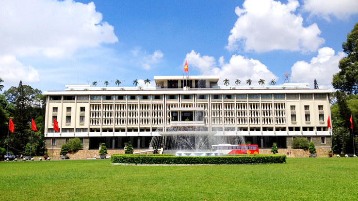
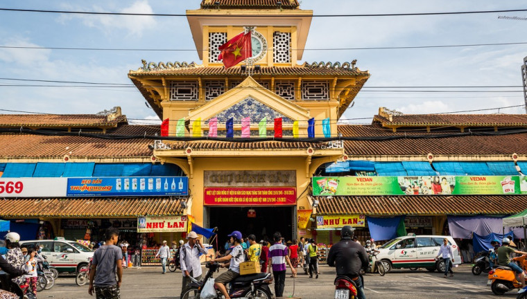
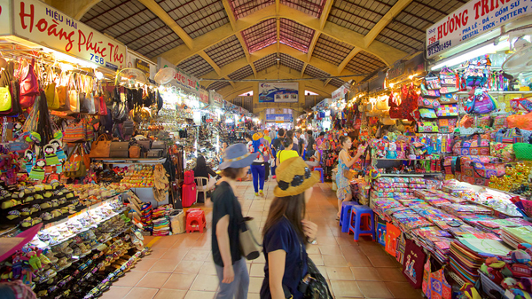
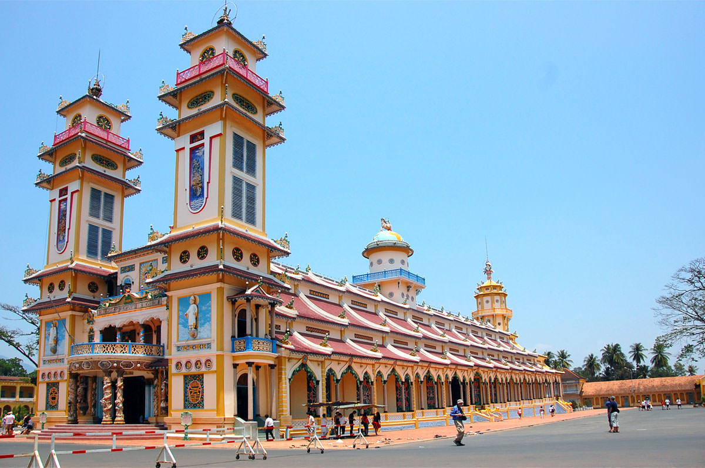
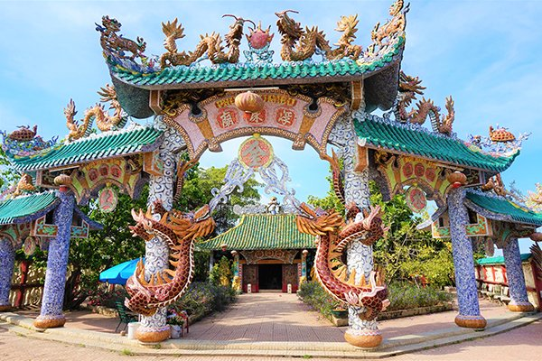
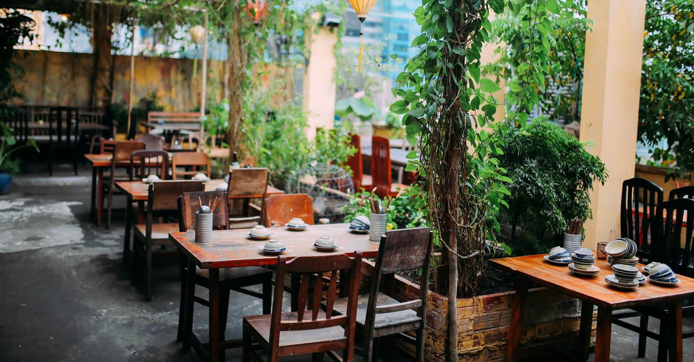
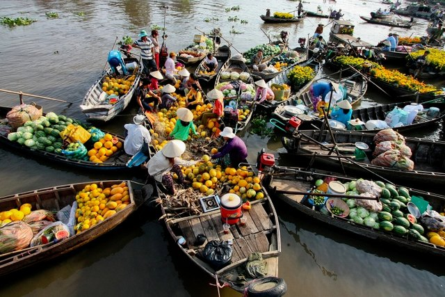
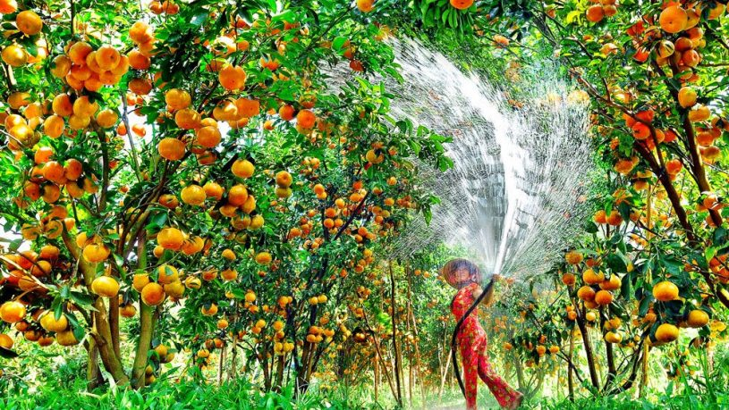
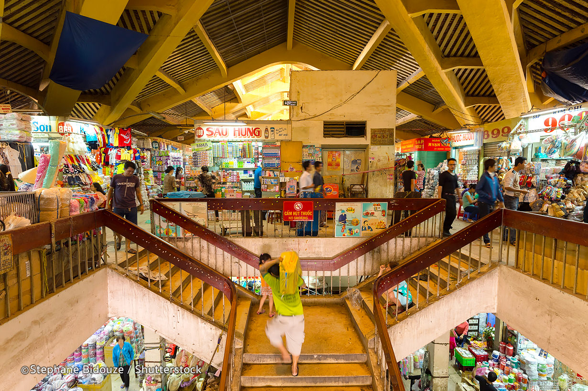

| Reunification palace | Cho Lon District | Ben Thanh market |
|---|---|---|
|  |  |  |
| Visit the Visit the Reunification palace (or the war memorials Museum), the Notre Dame Cathedral and the Central Post Office inspired by the Orsay Station in Paris. | Then transfer to Cho Lon District to discover its old quarter, the wholesale Binh Tay Market and Quan Am pagoda a colorful pagoda and one of the oldest pagodas in the city, its architecture and decorations have still remained since its construction. | Return to Saigon city for a walk in the city center, the former Catinat streets, exterior of Opera house, the city hall as well as Ben Thanh market. |
| Cao Dai temple | Phu Chau pagoda | Open air restaurant |
|---|---|---|
|  |  |  |
| Pick up from your hotel and transfer to Cai Be, visit a Cao Dai temple on route. Upon arrival, embark a boat trip on the branch of Mekong River to Vinh Long. Experience the rhythm of life on the legendary Mekong River by a visit to Cai Be floating market and the canals with orchards. Visit crafts workshops of rice popcorn, coconut caramel and rice cake. | Biking or walking on the village paths to discover the ancient and beautiful Phu Chau pagoda where the serenity reigns and meet the local people. | Enjoy a lunch in open air restaurant where you could taste a famous local specialty: The Elephant Fish ear, tasting great fruits, rowing a small rowboat in the canals which are shaded by the fruit trees.Continue our boat trip to Vinh Long, meet our driver at pier for a transfer to Can Tho. Arrive in Can Tho in the later afternoon.Check in hotel and relax. |
| Cai Rang floating market | Fruit gardens | Binh Market |
|---|---|---|
|  |  |  |
| Breakfast at hotel and transfer to the pier for a boat trip to visit Cai Rang floating market, a largest and lively marking in Mekong Delta. There are so many colors and smells in the bubbling atmosphere where hundreds of sampans are filled with goods such as rice, fruits, and craft products …all is shown to sell from the early morning. | We leave the market and continue the boat trip through the canals and visit a fruit gardens (or replace the garden by the nursery field by the river) | Back to An Binh Market which is full of fishes, fruits and vegetables. Stop at Binh Thuy ancient house with orchid garden where “The Lover” was filmed. Transfer back to Saigon and arrive in the later afternoon. Free till transfer to airport for your flight home. |
| Price List | |
|---|---|
| Numbers of people | Usual Price |
| Single | $1120 |
| Dual | $2200 |
| Triple | $3300 |
| Four and above | $1100 for each |